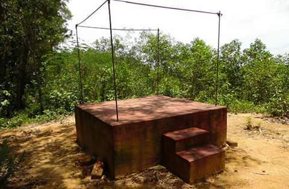

The Arjya Srabak Community Arannayaram at Chatarpitua is an ideal meditation center for practicing the spiritual meditation for the Buddhist mendicant community. The meditation center is situated at the East side hill of Chatarpitua village surrounded by enthralling natural atmosphere.
In 1933, the honorable priest, the leader of Entire Indian Buddhist community, Late and respectful Ananda Mitra The Great Senior founded this by building the first meditation cottage devoting and practicing with his meditation. In that time, Late Professor Babu Shurendranath Barua the worthy son of village helped Him overall with the cooperation of the villagers. Later The Modest Mendicant Late and respectful Bangsha Dwip The Great Senior came to practice forestry meditation to another adjacent hill.

The Respectful Bangsha Dwip The Great Senior was the teacher Vante of the honorable priest Ananda Mitra. By the staying period of the Monk and disciple under the hills, the fundamental idealistic matters were written down by practicing forestry meditation.After some years later, the respectful Bangsha Dwip The Great Senior left the place but the honorable priest Ananda Mitra the Great Senior stayed for 5/6 years here engaged in practicing meditation. Subsequently He also left the place.
Again in 21st century in 2011 at the starting of month of June, the Sacred priest and respectful Vishwamitra The Senior arrived with fortune at this Holy place. By building meditation cottage and engaging him in practicing meditation, he is still disseminating, spreading, and working in meditation to revive the dilapidated Holy place which is a welfare step for the village and the entire Buddhists. At present, the respectful Visshwa Mitra the Mendicant has created suitable meditation atmosphere or parameter for Him and for the other Mendicant community by building more meditation cottage at this Holy place.
t the time of staying of the honorable priest Ananda Mitra The Great Senior, some of the community Monks and Scholars who have participated in the discussion of religious matters in this place are: The Greatest Scholar Praggalok The Great Senior, The Arya Messenger Gyanishwar The Great Senior, The Honorable Scholar Professor Dharma Dhar, The Sacred Priest Arya Bangsha The Great Senior and many more great Scholars.
The present principal and Managing Director the Respectful Vissha Mitra the Senior has projected some following plans beside his meditation practice. Likewise:
“A religious organisation that practice Buddhism in every respect through meditation and follows Lord Buddha's dictum..”
Every living being has the same basic wish to be happy and to avoid suffering. Even newborn babies, animals, and insects have this wish. It has been our main wish since beginningless time and it is with us all the time, even during our sleep. We spend our whole life working hard to fulfil this wish.